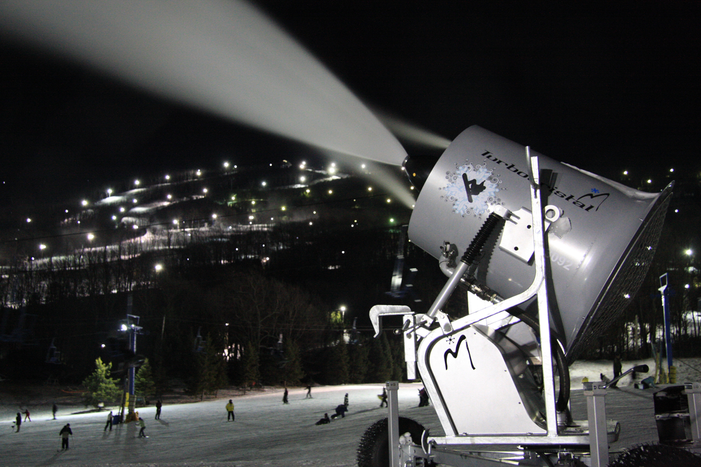

Snowmaking is the production of snow by forcing water and pressurized air through a "snow gun," also known as a "snow cannon", on ski slopes. Snowmaking is mainly used at ski resorts to supplement natural snow. This allows ski resorts to improve the reliability of their snow cover and to extend their ski seasons from late autumn to early spring. Indoor ski slopes often use snowmaking. They can generally do so year-round as they have a climate-controlled environment. The production of snow requires low temperatures. The threshold temperature for snowmaking increases as humidity decreases. Wet bulb temperature is used as a metric since it takes air temperature and relative humidity into account. Snowmaking is a relatively expensive process in its energy use, thereby limiting its use.
